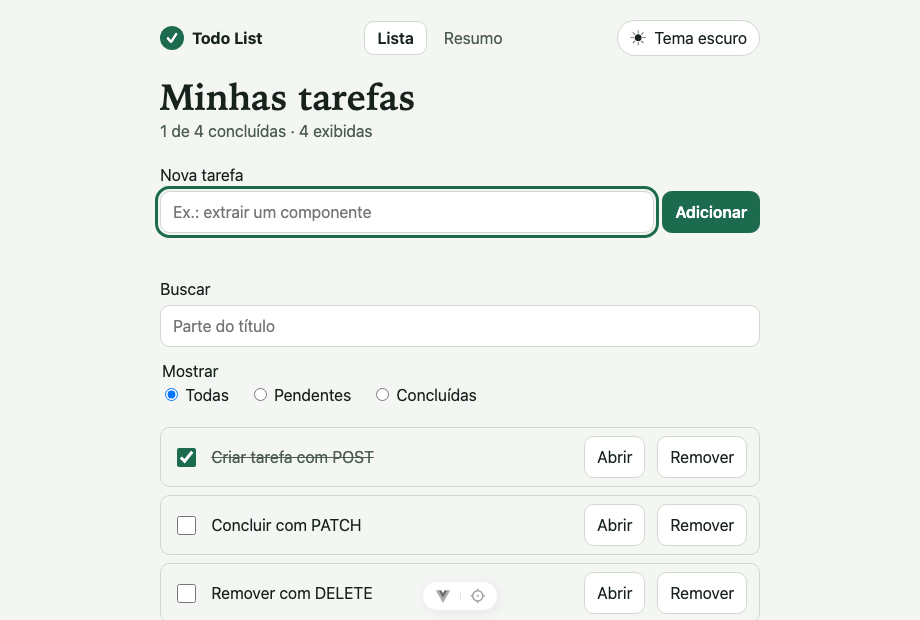
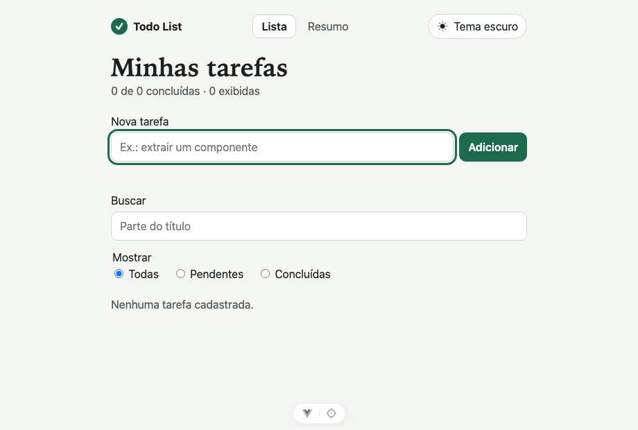

As tarefas saem do código e vão para um servidor
Desde a etapa 06 a lista está escrita no código. Hoje ela passa a vir de uma API, e entra o conceito que muda tudo: entre pedir e receber existe um intervalo — e a tela precisa existir durante ele.
| Critério | Evidência |
|---|---|
| A lista vem da API | Editar o db.json muda a tela |
| A requisição existe | Network, filtro Fetch/XHR: GET /tarefas → 200 |
| O intervalo | Explicar o que a tela mostra antes da resposta chegar |
onMounted. O que aparece na tela
entre o componente ser montado e a resposta chegar? E se a API estiver
desligada?
API REST, CRUD e async/await
| Operação | Verbo HTTP | Endereço |
|---|---|---|
| Listar | GET | /tarefas |
| Criar | POST | /tarefas |
| Alterar | PATCH | /tarefas/3 |
| Remover | DELETE | /tarefas/3 |
Recurso é o substantivo (/tarefas); o verbo diz o que fazer com ele. Hoje só o GET; os outros três são a etapa 20.
{
"tarefas": [
{ "id": 1, "titulo": "Subir a API", "concluida": true }
]
}import axios from 'axios'
const tarefas = ref([]) // nasce VAZIA
async function carregar() {
const resposta = await axios.get(`${API_URL}/tarefas`)
tarefas.value = resposta.data
}onMounted(carregar)Sem o await, tarefas.value receberia a Promise em vez da lista — e o v-for tentaria repetir sobre um objeto que não é um array.
Dois terminais, uma requisição
$ npm run api
JSON Server started on PORT :3000
Endpoints:
http://localhost:3000/tarefas$ npm run devGET http://localhost:3000/tarefas → 200 OK · application/json
# Response
[
{ "id": "1", "titulo": "Subir a API…", "concluida": true },
{ "id": "2", "titulo": "Buscar com axios.get", "concluida": false }
]
# Navegar para o Resumo e voltar: nenhuma requisição nova
A mesma tela de sempre — a diferença está em de onde vieram os dados.
Olhem o "id" na resposta: vem entre aspas. O json-server devolve ids como texto. É a lição da etapa 17 de novo, agora com a API no lugar do endereço.
ObserveEdite o db.json, salve e recarregue a página. Depois edite e não recarregue. O que explica a diferença?
Prática: ligar a aplicação na API
- Ponto de partida
- A sua cópia da etapa 17. A pasta da etapa 18 já traz a solução.
- 1
npm install axiosenpm install -D json-server; script"api": "json-server --watch db.json --port 3000".- 2
db.jsonna raiz, com a chave"tarefas"e as quatro tarefas.- 3
- No composable:
tarefas = ref([])e a funçãocarregarcomasync/await. - 4
- No
App.vue:onMounted(carregar). - Evidência
- Editar o
db.jsone recarregar muda a lista; o Network mostra oGET.
Dica 1
São dois terminais. Se a lista vier vazia, confira se o terminal da API está rodando.
Dica 2
A tela da tarefa (/tarefa/1) vai parar de achar a tarefa. Olhe o tipo do id na resposta antes de mexer em qualquer outra coisa.
Mostrar solução (após a tentativa)
const tarefas = ref([])
async function carregar() {
const resposta = await axios.get(`${API_URL}/tarefas`)
tarefas.value = resposta.data
}// TarefaView.vue — o id agora vem como texto
const mesmoId = (item) => String(item.id) === String(route.params.id)
const tarefa = computed(() => tarefas.value.find(mesmoId))O intervalo entre pedir e receber
1. tarefas = [] // o ref nasce vazio
2. o template desenha // lista vazia na tela
3. onMounted dispara o GET // o pedido sai
… intervalo … // a tela JÁ ESTÁ na frente do usuário
4. a resposta chega
5. tarefas.value = dados // a tela se atualizaO passo 3 não “pausa” a aplicação. JavaScript não espera parado: ele segue, e avisa depois. Por isso a tela precisa fazer sentido no passo 2 — quando ainda não há dado nenhum.
| Onde o intervalo é invisível | Onde ele dói |
|---|---|
localhost, 2 ms | Celular em rede fraca, 3 s |
| Quatro tarefas | Quatro mil registros |
| Servidor acordado | Servidor hibernando, 10 s |
Vocês vão programar em localhost e os usuários vão usar em 4G no ônibus. Toda a Unidade 6 é sobre não esquecer disso.
Para ver o intervalo: DevTools › Network › Throttling › Slow 3G. É a etapa 19.
Investigação: a tela que mente

Tela real depois de desligar a API (Ctrl+C no terminal 1) e recarregar.
Failed to load resource: net::ERR_CONNECTION_REFUSED
Uncaught (in promise) Network ErrorA tela diz “Nenhuma tarefa cadastrada.” É falso: as tarefas existem; nós é que não conseguimos perguntar.
O que está faltando
Pegar a falha; um estado “falhou”, diferente de “vazio”; e um “ainda estou perguntando”. São os quatro estados da etapa 19.
Pesquisar: async/await e o que a API devolve
Vue 3 com <script setup> e axios:
const resposta = await axios.get('http://localhost:3000/tarefas')
tarefas.value = resposta.data
Explique, citando a documentação oficial:
1. o que é `resposta` e por que `.data`;
2. o que aconteceria sem o `await`;
3. por que o id vem como "1" e não 1, e o que
isso quebra numa comparação.| A resposta deve dizer | Sinal de resposta ruim |
|---|---|
resposta tem data, status, headers | Trata resposta e resposta.data como a mesma coisa |
Sem await, tarefas vira uma Promise | “Funciona igual, só é mais feio” |
JSON distingue "1" de 1; quem decide é quem gera | Diz que o axios converte sozinho |
"1" === 1 é false — comparar como texto | Sugere == (dois iguais) como solução |
Onde conferir
Verificação sem IA
- O que a tela mostra entre o
onMounteddisparar e a resposta chegar? - Por que
resposta.datae nãoresposta? - Com a API desligada, a tela diz “Nenhuma tarefa cadastrada.”. Qual é o problema dessa frase?